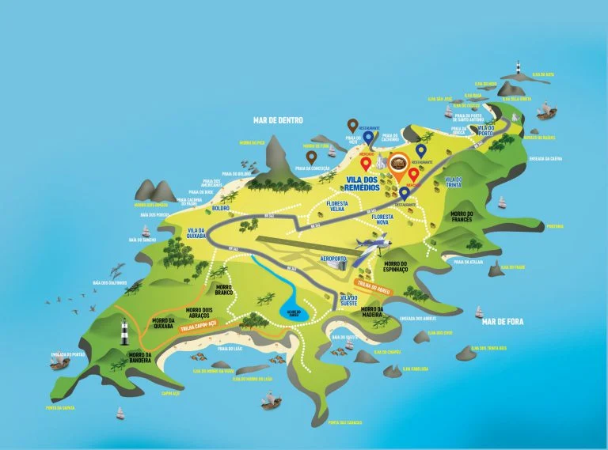

Navegue pelo arquipélago
Explore as principais praias, trilhas, vilas e pontos de referência de Fernando de Noronha. Use os controles para ampliar e arrastar o mapa.

Fonte: Mapa turístico ilustrado · Ilha de Fernando de Noronha
📍 Arraste para explorar · Pinça para zoomPraias Icônicas
Baía do Sancho, Praia do Leão, Cacimba do Padre e Praia da Atalaia estão entre as mais belas do Brasil.
Floresta e Trilhas
Floresta Nova e Floresta Velha abrigam trilhas como a Trilha do Atalaia e Trilha Capom-Açu.
Vila dos Remédios
Centro da ilha, com restaurantes, pousadas, a Igreja N.S. dos Remédios e a vida noturna local.
Mar de Dentro e Fora
O lado calmo (Mar de Dentro) é ideal para mergulho; o Mar de Fora tem ondas para surf.